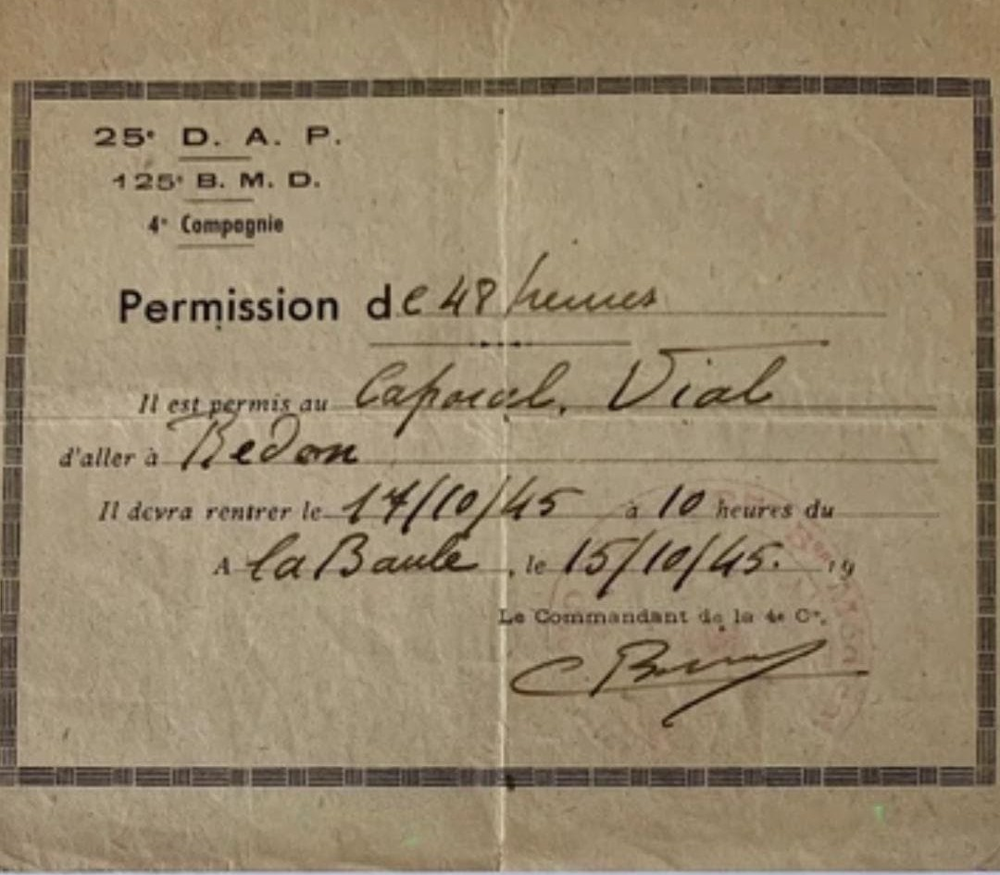

La Permission Militaire est un document officiel autorisant un soldat à quitter temporairement son unité. Elle précise la durée, le trajet, les obligations du militaire et les signatures des autorités responsables. Ce document est indispensable pour circuler légalement en période de guerre.
La permission autorise le soldat à quitter son unité pour une durée limitée. Elle doit être présentée aux autorités civiles et militaires lors des contrôles, notamment dans les gares, postes de police ou points de passage.
Le document rappelle que le soldat doit : revenir à l’heure indiquée, respecter son trajet, éviter les zones interdites et conserver la permission sur lui en permanence.
En 1939‑1940, les permissions sont strictement encadrées. Elles permettent aux soldats de retrouver leur famille, mais aussi de maintenir le moral dans une armée mobilisée sur tout le territoire.
Les permissions militaires sont essentielles pour comprendre la vie quotidienne du soldat, ses déplacements, ses obligations et l’organisation administrative de l’armée française.